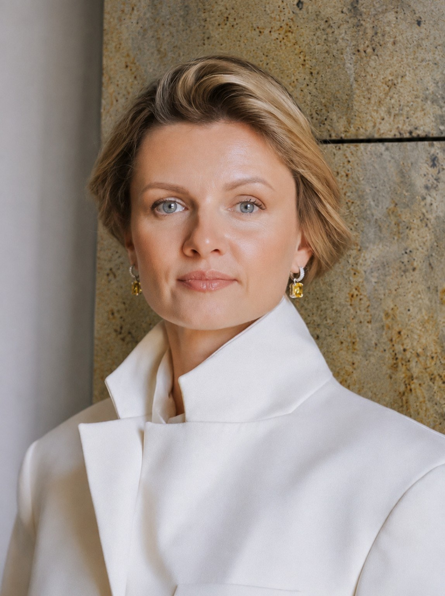
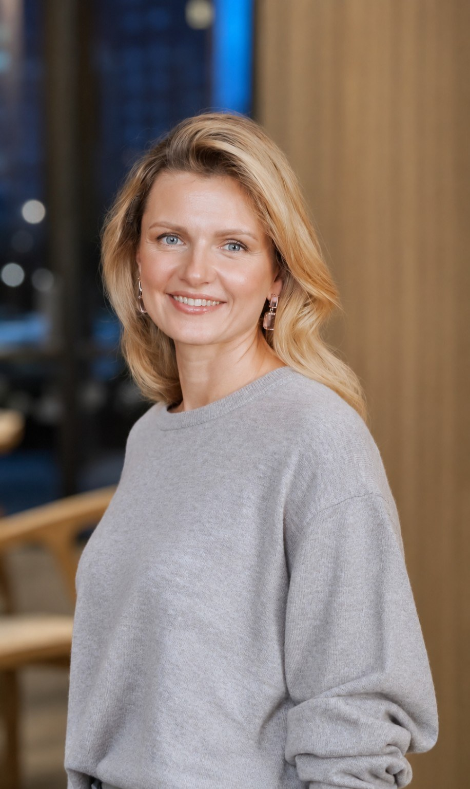
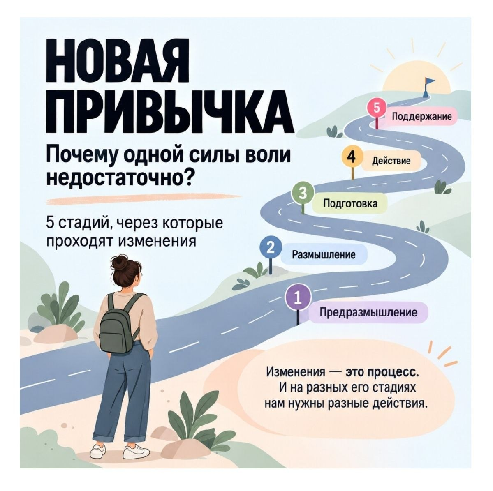
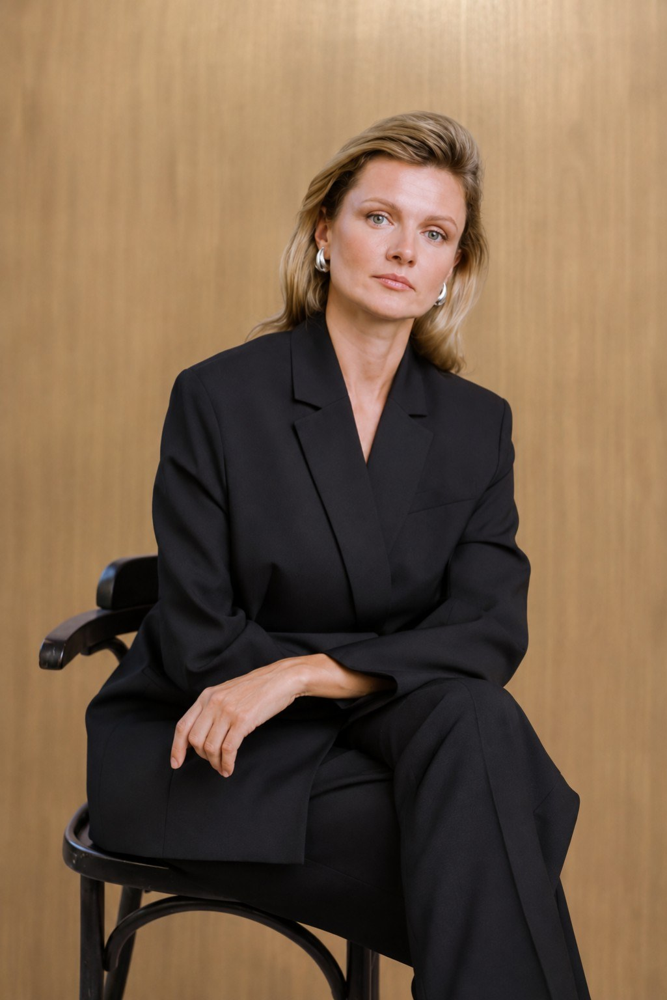
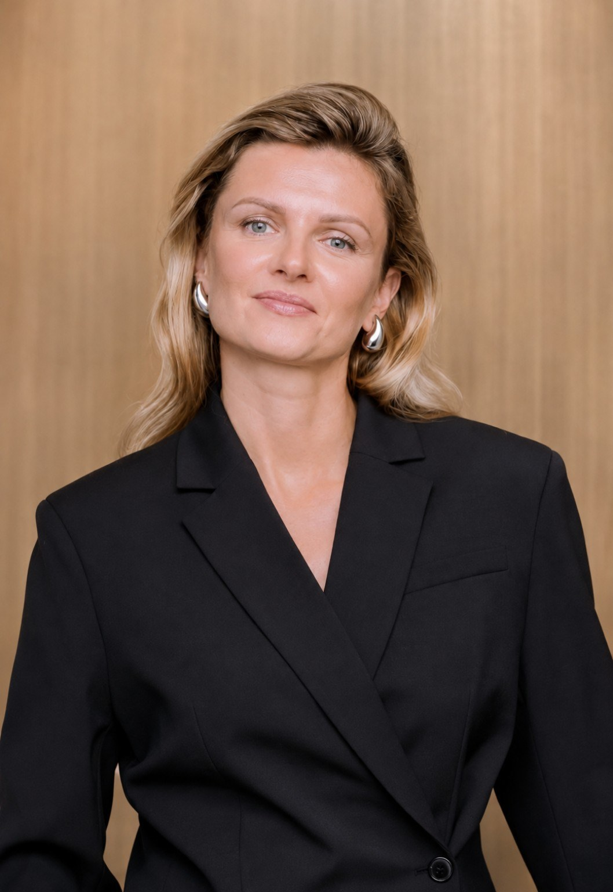

Неуверенность и недовольство собой
Постоянно сомневаюсь в себе, сравниваю себя с другими, мне с собой тяжело.

Я Елена — психолог и стратегический терапевт. Помогаю проходить кризисы, справляться с тревогой, апатией и выгоранием, лучше понимать себя и свои отношения, находить устойчивость в переменах.
Более 18 лет я работала тренером в адаптивном спорте и видела, как люди раскрывают свои возможности в непростых обстоятельствах.
Обучаясь психологии, я сама почувствовала, как работа с психикой меняет внутреннее состояние и жизнь в целом. Это открытие стало поворотным моментом и моим профессиональным выбором.
В работе я учитываю состояние и возможности человека, помогаю заметить, что поддерживает трудности сегодня, и найти решения, которые будут работать в его жизни.
У каждого человека своя история. Возможно, среди этих ситуаций вы узнаете то, что сейчас происходит с вами.
Постоянно сомневаюсь в себе, сравниваю себя с другими, мне с собой тяжело.
Я на дне, не знаю, что делать, с чего начать и чего хочу на самом деле. Или вроде всё есть, но не понимаю, что дальше.
Чувствую усталость, апатию, потерю интереса почти ко всему.
Постоянно переживаю, прокручиваю всё в голове, не могу расслабиться.
Меня не понимают, я стесняюсь, не могу общаться и спокойно выражать своё мнение, конфликты с близкими, партнёрами, детьми и родителями.
Не могу справляться со своими чувствами: вина, стыд, зависть, ревность, обида, злость.
Хочу разобраться в своих приоритетах и понять, куда вкладывать силы.
Вы можете обратиться ко мне и с другим запросом. Необязательно точно формулировать проблему заранее. Если вам кажется, что я тот специалист, с которым вы сможете разобраться в своей ситуации, мы можем начать с разговора о том, что вас беспокоит.
РАССКАЗАТЬ О СВОЕЙ СИТУАЦИИ ↗
Работаю на равных, без позиции «я лучше знаю».
Уважаю ценность, автономию и выбор клиента.
Стремлюсь понять ваш опыт, взглянуть на ситуацию вашими глазами и действовать в ваших интересах.
Помогаю находить собственные причины и ресурсы для изменений, не навязывая готовых решений.
Соблюдаю Этический кодекс психолога.
Личная работа или новый опыт в группе — можно начать с того формата, который сейчас вам ближе.
60 МИНУТ · МОСКВА / ОНЛАЙН
ГРУППОВОЙ ФОРМАТ · ДАТЫ ПРИ ЗАПИСИ
4 ВСТРЕЧИ ПО 120 МИНУТ
Внимание к мыслям, чувствам и телесным ощущениям.

Когда подготовка уже есть, а начать консультировать всё ещё страшно, особенно важны практика и профессиональная поддержка перехода от обучения к работе.
Трёхчасовые встречи сочетают теорию, упражнения и тренировку навыков консультирования в мини-группе.
ЗАПИСАТЬСЯ ↗Выступления, мастер-классы, коммуникативные игры и совместные проекты о психологии общения и отношениях.
ОБСУДИТЬ СОТРУДНИЧЕСТВО ↗
Мастер-класс с Павлом Синицей о знакомствах и близости в эпоху быстрых отказов.
«Как не бояться разговаривать с незнакомцами?»
На русском и французском.
Мастер-класс о социальной тревожности с Павлом Синицей.
Социальная тревожность и новые форматы работы психолога.
Опыт проведения встреч в Москве и онлайн.

ОТЗЫВ · Отзыв коллеги о выступлении на конгрессе — ЧИТАТЬ В TELEGRAM ↗
Московская психологическая лаборатория 12
Российский государственный социальный университет
Программа «Мастер»
Магистратура, Московский институт психоанализа · обучение продолжается
Эриксоновская терапия, ИГПиСП
EMDR-терапия, базовый курс, Ассоциация EMDR Казахстан
Мотивационное консультирование, МПЛ12
Практика работы с ОКР и расстройствами ОК-спектра, PROOKP
Работа с травмой насилия в близких отношениях, АНО «НеТерпи»
Когнитивно-бихевиоральные технологии в клинической практике, МИП
Карьерное консультирование в экзистенциально-аналитическом подходе, АЭАПП
О функциях привычного внутреннего голоса и отношении к себе.
ЧИТАТЬ В TELEGRAM ↗Размышления о том, как обходиться с собой, когда хочется изменений.
ЧИТАТЬ В TELEGRAM ↗О различиях, которые помогают точнее понимать себя в контакте с другими.
ЧИТАТЬ В TELEGRAM ↗Напишите, что происходит и с чем хочется разобраться. Вместе определим, какой формат подойдёт вашему запросу.
НАПИСАТЬ МНЕ В TELEGRAM ↗Расскажите об аудитории, задаче встречи и желаемом формате. Обсудим программу вместе.
ОБСУДИТЬ СОТРУДНИЧЕСТВО ↗Личный Telegram: @ElenaZellerPsy
Канал: @PsyTrainerConsult
ВКонтакте: @elenatseller
Instagram: @ellezeller_psy